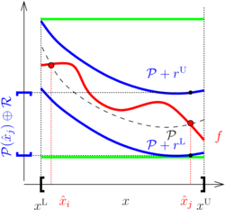
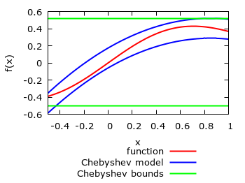

- Generated on Mon May 1 2017 01:17:05 for MC++ by
 1.8.11
1.8.11
|
MC++
|
A \(q\)th-order Chebyshev model of a Lipschitz-continuous function \(f:\mathbb{R}^n\to\mathbb{R}\) on the domain \(D\), consists of a \(q^{\rm th}\)-order multivariate polynomial \(\mathcal P\) in Chebyshev basis , plus a remainder term \(\mathcal R\), so that
\begin{align*} f({x}) \in \mathcal P({x}) \oplus \mathcal R, \quad \forall {x}\in D. \end{align*}
The polynomial part \(\mathcal P\) is propagated symbolically and accounts for functional dependencies. The remainder term \(\mathcal R\), on the other hand, is traditionally computed using interval analysis [Brisebarre & Joldes, 2010]; see figure below. More generally, convex/concave bounds or an ellipsoidal enclosure can be computed for the remainder term of vector-valued functions too. In particular, it can be established that the remainder term has convergence order (no less than) \(q+1\) with respect to the diameter of the domain set \(D\) under mild conditions [Bompadre et al., 2012].

|
The classes mc::CModel and mc::CVar provide an implementation of Chebyshev model arithmetic. We note that mc::CModel / mc::CVar is not a verified implementation in the sense that rounding errors are not accounted for in propagating the coefficients in the multivariate polynomial part, which are treated as floating-point numbers.
The implementation of mc::CModel and mc::CVar relies on the operator/function overloading mechanism of C++. This makes the computation of Chebyshev models both simple and intuitive, similar to computing function values in real arithmetics or function bounds in interval arithmetic (see Non-Verified Interval Arithmetic for Factorable Functions). Moreover, mc::CVar can be used as the template parameter of other available types in MC++; for instance, mc::CVar can be used in order to propagate the underlying interval bounds in mc::McCormick. Likewise, mc::CVar can be used as the template parameter of the types fadbad::F, fadbad::B and fadbad::T of FADBAD++ for computing Chebyshev models of either the partial derivatives or the Chebyshev coefficients of a factorable function (see sec_CHEBYSHEV_fadbad).
mc::CModel and mc::CVar themselves are templated in the type used to propagate bounds on the remainder term. By default, mc::CModel and mc::CVar can be used with the non-verified interval type mc::Interval of MC++. For reliability, however, it is strongly recommended to use verified interval arithmetic such as PROFIL (header file mcprofil.hpp) or FILIB++ (header file mcfilib.hpp). As already noted, convex/concave bounds on the remainder term can also be propagated by using the type mc::McCormick of MC++, thereby enabling McCormick-Chebyshev models.
As well as propagating Chebyshev models for factorable functions, mc::CModel and mc::CVar provide support for computing bounds on the Chebyshev model range (multivariate polynomial part). We note that computing exact bounds for multivariate polynomials is a hard problem in general. Instead, a number of computationally tractable, yet typically conservative, bounding approaches are implemented in mc::CModel and mc::CVar, which include:
Examples of Chebyshev models (blue lines) constructed with mc::CModel and mc::CVar are shown on the figure below for the factorable function \(f(x)=x \exp(-x^2)\) (red line) for \(x\in [-0.5,1]\). Also shown on these plots are the interval bounds computed from the Chebyshev models.

|
Suppose we want to compute a 4th-order Chebyshev model for the real-valued function \(f(x,y)=x\exp(x+y^2)-y^2\) with \((x,y)\in [1,2]\times[0,1]\). For simplicity, bounds on the remainder terms are computed using the default interval type mc::Interval here:
First, the number of independent variables in the factorable function ( \(x\) and \(y\) here) as well as the order of the Chebyshev model (4th order here) are specified by defining an mc::CModel object as:
Next, the variables \(x\) and \(y\) are defined as follows:
Essentially, the first line means that X is a variable of class mc::CVar, participating in the Chebyshev model mod, belonging to the interval \([1,2]\), and having index 0 (indexing in C/C++ start at 0 by convention!). The same holds for the Chebyshev variable Y, participating in the model mod, belonging to the interval \([0,1]\), and having index 1.
Having defined the variables, a Chebyshev model of \(f(x,y)=x\exp(x+y^2)-y^2\) on \([1,2]\times[0,1]\) at the mid-point \((\frac{3}{2},\frac{1}{2})\) is simply computed as:
This model can be displayed to the standard output as:
which produces the following output:
f Chebyshev model: a0 = 8.38199e+00 0 0 a1 = 1.90755e+00 0 1 a2 = 3.59621e+00 1 0 a3 = 7.47482e-01 0 2 a4 = 9.00782e-01 1 1 a5 = 6.30186e-01 2 0 a6 = 1.56945e-01 0 3 a7 = 3.35238e-01 1 2 a8 = 1.55141e-01 2 1 a9 = 6.67468e-02 3 0 a10 = 3.49519e-02 0 4 a11 = 6.58449e-02 1 3 a12 = 6.04330e-02 2 2 a13 = 1.80397e-02 3 1 a14 = 5.41191e-03 4 0 R = [ -2.09182e+00 : 2.22652e+00 ] B = [ -1.02564e+01 : 3.93973e+01 ]
a0,...,a14 refer to the coefficients of the monomial terms in the Chebyshev model, with the corresponding variable orders given in the subsequent columns. The remainder term as well as the Chebyshev model range estimator are reported next.
Other operations involve retreiving the remainder bound, centering the remainder term in a Chebyshev model, or computing the value of its polynomial part at a given point:
See the documentations of mc::CModel and mc::CVar for a complete list of member functions.
mc::CVar overloads the usual functions exp, log, sqr, sqrt, pow, inv, cos, sin, tan, acos, asin, atan. Unlike mc::Interval and mc::McCormick, the functions min, max and fabs are not overloaded in mc::CVar as they are nonsmooth. Moreover, mc::CVar defines the following functions:
inter(x,y,z), computing a Chebyshev model of the intersection \(x = y\cap z\) of two Chebyshev models and returning true/false if the intersection is nonempty/empty. With Chebyshev models \(\mathcal P_y\oplus\mathcal R_y\) and \(\mathcal P_z\oplus\mathcal R_z\), this intersection is computed as follows: \begin{align*} \mathcal P_{x} =\ & (1-\eta) \mathcal P_y^{\rm C} + \eta \mathcal P_z^{\rm C}\\ \mathcal R_{x} =\ & [\mathcal R_y^{\rm C}\oplus\eta\mathcal{B}(\mathcal P_y^{\rm C}-\mathcal P_z^{\rm C})] \cap [\mathcal R_z^{\rm C}\oplus (1-\eta)\mathcal{B}(\mathcal P_z^{\rm C}-\mathcal P_y^{\rm C})]\,. \end{align*}
with \(\mathcal{B}(\cdot)\) the Chebyshev model range bounder, and \(\eta\) a real scalar in \([0,1]\). Choosing \(\eta=1\) amounts to setting the polynomial part \(\mathcal P_{x}\) as \(\mathcal P_y\), whereas \(\eta=0\) sets \(\mathcal P_{x}\) as \(\mathcal P_z\). The parameter \(\eta\) can be defined in mc::CModel::Options::REF_POLY.hull(x,y), computing a Chebyshev model of the union \(x = y\cup z\) of two Chebyshev models. With Chebyshev models \(\mathcal P_y\oplus\mathcal R_y\) and \(\mathcal P_z\oplus\mathcal R_z\), this union is computed as follows: \begin{align*} \mathcal P_{x} =\ & (1-\eta) \mathcal P_y^{\rm C} + \eta \mathcal P_z^{\rm C}\\ \mathcal R_{x} =\ & {\rm hull}\{\mathcal R_y^{\rm C}\oplus\eta\mathcal{B}(\mathcal P_y^{\rm C}-\mathcal P_z^{\rm C}), \mathcal R_z^{\rm C}\oplus (1-\eta)\mathcal{B}(\mathcal P_z^{\rm C}-\mathcal P_y^{\rm C})\}\,. \end{align*}
with \(\mathcal{B}(\cdot)\) and \(\eta\) as previously.The class mc::CModel has a public member called mc::CModel::options that can be used to set/modify the options; e.g.,
The available options are the following:
| Name | Type | Default | Description |
|---|---|---|---|
BOUNDER_TYPE | mc::CModel::Options::BOUNDER | mc::CModel::Options::LSB | Chebyshev model range bounder. |
BOUNDER_ORDER | unsigned int | 0 | Order of Bernstein polynomial for Chebyshev model range bounding, when mc::CModel::options::BOUNDER_TYPE = mc::CModel::options::BERNSTEIN is selected. Only values greater than the actual Chebyshev model order are accounted for; see [Lin & Rokne, 1996]. |
REF_POLY | double | 0. | Scalar in \([0,1]\) related to the choice of the polynomial part in the overloaded functions mc::inter and mc::hull (see Which functions are overloaded for Chebyshev model arithmetic?). A value of 0. amounts to selecting the polynomial part of the left operand, whereas a value of 1. selects the right operand. |
DISPLAY_DIGITS | unsigned int | 5 | Number of digits in output stream for Chebyshev model coefficients. |
Errors are managed based on the exception handling mechanism of the C++ language. Each time an error is encountered, a class object of type mc::CModel::Exceptions is thrown, which contains the type of error. It is the user's responsibility to test whether an exception was thrown during the computation of a Chebyshev model, and then make the appropriate changes. Should an exception be thrown and not caught by the calling program, the execution will abort.
Possible errors encountered during the computation of a Chebyshev model are:
| Number | Description |
|---|---|
1 | Division by zero |
2 | Failed to compute eigenvalue decomposition in range bounder CModel::Options::EIGEN |
3 | Failed to compute the maximum gap between a univariate term and its Bernstein model |
-1 | Number of variable in Chebyshev model must be nonzero |
-2 | Failed to construct Chebyshev variable |
-3 | Chebyshev model bound does not intersect with bound in template parameter arithmetic |
-4 | Operation between Chebyshev variables linked to different Chebyshev models |
-5 | Maximum size of Chebyshev model reached (monomials indexed as unsigned int) |
-33 | Feature not yet implemented in mc::CModel |
Moreover, exceptions may be thrown by the template parameter class itself.
template <typename t>=""> inline void SCModel<T>::_sdisp1D ( const std::vector<std::map<unsigned,double>>&CVmap, const unsigned ndxvar, std::string&CVname, ostream&os ) const A \(q\)th-order Chebyshev model of a Lipschitz-continuous function \(f:\mathbb{R}^n\to\mathbb{R}\) on the domain \(D\), consists of a \(q^{\rm th}\)-order multivariate polynomial \(\mathcal P\) in Chebyshev basis , plus a remainder term \(\mathcal R\), so that
\begin{align*} f({x}) \in \mathcal P({x}-\hat{x}) \oplus \mathcal R, \quad \forall {x}\in D. \end{align*}
The polynomial part \(\mathcal P\) is propagated symbolically and accounts for functional dependencies. The remainder term \(\mathcal R\), on the other hand, is traditionally computed using interval analysis [Brisebarre & Joldes, 2010]; see figure below. More generally, convex/concave bounds or an ellipsoidal enclosure can be computed for the remainder term of vector-valued functions too. In particular, it can be established that the remainder term has convergence order (no less than) \(q+1\) with respect to the diameter of the domain set \(D\) under mild conditions [Bompadre et al., 2012].
The classes mc::SCModel and mc::SCVar provide an implementation of Chebyshev model arithmetic. We note that mc::SCModel / mc::SCVar is not a verified implementation in the sense that rounding errors are not accounted for in propagating the coefficients in the multivariate polynomial part, which are treated as floating-point numbers.
The implementation of mc::SCModel and mc::SCVar relies on the operator/function overloading mechanism of C++. This makes the computation of Chebyshev models both simple and intuitive, similar to computing function values in real arithmetics or function bounds in interval arithmetic (see Non-Verified Interval Arithmetic for Factorable Functions). Moreover, mc::SCVar can be used as the template parameter of other available types in MC++; for instance, mc::SCVar can be used in order to propagate the underlying interval bounds in mc::McCormick. Likewise, mc::SCVar can be used as the template parameter of the types fadbad::F, fadbad::B and fadbad::T of FADBAD++ for computing Chebyshev models of either the partial derivatives or the Chebyshev coefficients of a factorable function (see sec_CHEBYSHEV_fadbad).
mc::SCModel and mc::SCVar themselves are templated in the type used to propagate bounds on the remainder term. By default, mc::SCModel and mc::SCVar can be used with the non-verified interval type mc::Interval of MC++. For reliability, however, it is strongly recommended to use verified interval arithmetic such as PROFIL (header file mcprofil.hpp) or FILIB++ (header file mcfilib.hpp). As already noted, convex/concave bounds on the remainder term can also be propagated by using the type mc::McCormick of MC++, thereby enabling McCormick-Chebyshev models.
As well as propagating Chebyshev models for factorable functions, mc::SCModel and mc::SCVar provide support for computing bounds on the Chebyshev model range (multivariate polynomial part). We note that computing exact bounds for multivariate polynomials is a hard problem in general. Instead, a number of computationally tractable, yet typically conservative, bounding approaches are implemented in mc::SCModel and mc::SCVar, which include:
Examples of Chebyshev models (blue lines) constructed with mc::SCModel and mc::SCVar are shown on the figure below for the factorable function \(f(x)=x \exp(-x^2)\) (red line) for \(x\in [-0.5,1]\). Also shown on these plots are the interval bounds computed from the Chebyshev models.
Suppose we want to compute a 4th-order Chebyshev model for the real-valued function \(f(x,y)=x\exp(x+y^2)-y^2\) with \((x,y)\in [1,2]\times[0,1]\). For simplicity, bounds on the remainder terms are computed using the default interval type mc::Interval here:
First, the number of independent variables in the factorable function ( \(x\) and \(y\) here) as well as the order of the Chebyshev model (4th order here) are specified by defining an mc::SCModel object as:
Next, the variables \(x\) and \(y\) are defined as follows:
Essentially, the first line means that X is a variable of class mc::SCVar, participating in the Chebyshev model mod, belonging to the interval \([1,2]\), and having index 0 (indexing in C/C++ start at 0 by convention!). The same holds for the Chebyshev variable Y, participating in the model mod, belonging to the interval \([0,1]\), and having index 1.
Having defined the variables, a Chebyshev model of \(f(x,y)=x\exp(x+y^2)-y^2\) on \([1,2]\times[0,1]\) at the mid-point \((\frac{3}{2},\frac{1}{2})\) is simply computed as:
This model can be displayed to the standard output as:
which produces the following output:
f Chebyshev model: a0 = 8.38199e+00 0 0 a1 = 1.90755e+00 0 1 a2 = 3.59621e+00 1 0 a3 = 7.47482e-01 0 2 a4 = 9.00782e-01 1 1 a5 = 6.30186e-01 2 0 a6 = 1.56945e-01 0 3 a7 = 3.35238e-01 1 2 a8 = 1.55141e-01 2 1 a9 = 6.67468e-02 3 0 a10 = 3.49519e-02 0 4 a11 = 6.58449e-02 1 3 a12 = 6.04330e-02 2 2 a13 = 1.80397e-02 3 1 a14 = 5.41191e-03 4 0 R = [ -2.09182e+00 : 2.22652e+00 ] B = [ -1.02564e+01 : 3.93973e+01 ]
a0,...,a14 refer to the coefficients of the monomial terms in the Chebyshev model, with the corresponding variable orders given in the subsequent columns. The remainder term as well as the Chebyshev model range estimator are reported next.
Other operations involve retreiving the remainder bound, centering the remainder term in a Chebyshev model, or computing the value of its polynomial part at a given point:
See the documentations of mc::SCModel and mc::SCVar for a complete list of member functions.
mc::SCVar overloads the usual functions exp, log, sqr, sqrt, pow, inv, cos, sin, tan, acos, asin, atan. Unlike mc::Interval and mc::McCormick, the functions min, max and fabs are not overloaded in mc::SCVar as they are nonsmooth. Moreover, mc::SCVar defines the following functions:
inter(x,y,z), computing a Chebyshev model of the intersection \(x = y\cap z\) of two Chebyshev models and returning true/false if the intersection is nonempty/empty. With Chebyshev models \(\mathcal P_y\oplus\mathcal R_y\) and \(\mathcal P_z\oplus\mathcal R_z\), this intersection is computed as follows: \begin{align*} \mathcal P_{x} =\ & (1-\eta) \mathcal P_y^{\rm C} + \eta \mathcal P_z^{\rm C}\\ \mathcal R_{x} =\ & [\mathcal R_y^{\rm C}\oplus\eta\mathcal{B}(\mathcal P_y^{\rm C}-\mathcal P_z^{\rm C})] \cap [\mathcal R_z^{\rm C}\oplus (1-\eta)\mathcal{B}(\mathcal P_z^{\rm C}-\mathcal P_y^{\rm C})]\,. \end{align*}
with \(\mathcal{B}(\cdot)\) the Chebyshev model range bounder, and \(\eta\) a real scalar in \([0,1]\). Choosing \(\eta=1\) amounts to setting the polynomial part \(\mathcal P_{x}\) as \(\mathcal P_y\), whereas \(\eta=0\) sets \(\mathcal P_{x}\) as \(\mathcal P_z\). The parameter \(\eta\) can be defined in mc::SCModel::Options::REF_POLY.hull(x,y), computing a Chebyshev model of the union \(x = y\cup z\) of two Chebyshev models. With Chebyshev models \(\mathcal P_y\oplus\mathcal R_y\) and \(\mathcal P_z\oplus\mathcal R_z\), this union is computed as follows: \begin{align*} \mathcal P_{x} =\ & (1-\eta) \mathcal P_y^{\rm C} + \eta \mathcal P_z^{\rm C}\\ \mathcal R_{x} =\ & {\rm hull}\{\mathcal R_y^{\rm C}\oplus\eta\mathcal{B}(\mathcal P_y^{\rm C}-\mathcal P_z^{\rm C}), \mathcal R_z^{\rm C}\oplus (1-\eta)\mathcal{B}(\mathcal P_z^{\rm C}-\mathcal P_y^{\rm C})\}\,. \end{align*}
with \(\mathcal{B}(\cdot)\) and \(\eta\) as previously.The class mc::SCModel has a public member called mc::SCModel::options that can be used to set/modify the options; e.g.,
The available options are the following:
| Name | Type | Default | Description |
|---|---|---|---|
BOUNDER_TYPE | mc::SCModel::Options::BOUNDER | mc::SCModel::Options::LSB | Chebyshev model range bounder. |
BOUNDER_ORDER | unsigned int | 0 | Order of Bernstein polynomial for Chebyshev model range bounding, when mc::SCModel::options::BOUNDER_TYPE = mc::SCModel::options::BERNSTEIN is selected. Only values greater than the actual Chebyshev model order are accounted for; see [Lin & Rokne, 1996]. |
REF_POLY | double | 0. | Scalar in \([0,1]\) related to the choice of the polynomial part in the overloaded functions mc::inter and mc::hull (see Which functions are overloaded for Chebyshev model arithmetic?). A value of 0. amounts to selecting the polynomial part of the left operand, whereas a value of 1. selects the right operand. |
DISPLAY_DIGITS | unsigned int | 5 | Number of digits in output stream for Chebyshev model coefficients. |
Errors are managed based on the exception handling mechanism of the C++ language. Each time an error is encountered, a class object of type mc::SCModel::Exceptions is thrown, which contains the type of error. It is the user's responsibility to test whether an exception was thrown during the computation of a Chebyshev model, and then make the appropriate changes. Should an exception be thrown and not caught by the calling program, the execution will abort.
Possible errors encountered during the computation of a Chebyshev model are:
| Number | Description |
|---|---|
1 | Division by zero |
2 | Failed to compute eigenvalue decomposition in range bounder SCModel::Options::EIGEN |
3 | Failed to compute the maximum gap between a univariate term and its Bernstein model |
-1 | Number of variable in Chebyshev model must be nonzero |
-2 | Failed to construct Chebyshev variable |
-3 | Chebyshev model bound does not intersect with bound in template parameter arithmetic |
-4 | Operation between Chebyshev variables linked to different Chebyshev models |
-5 | Maximum size of Chebyshev model reached (monomials indexed as unsigned int) |
-33 | Feature not yet implemented in mc::SCModel |
Moreover, exceptions may be thrown by the template parameter class itself.
1.8.11